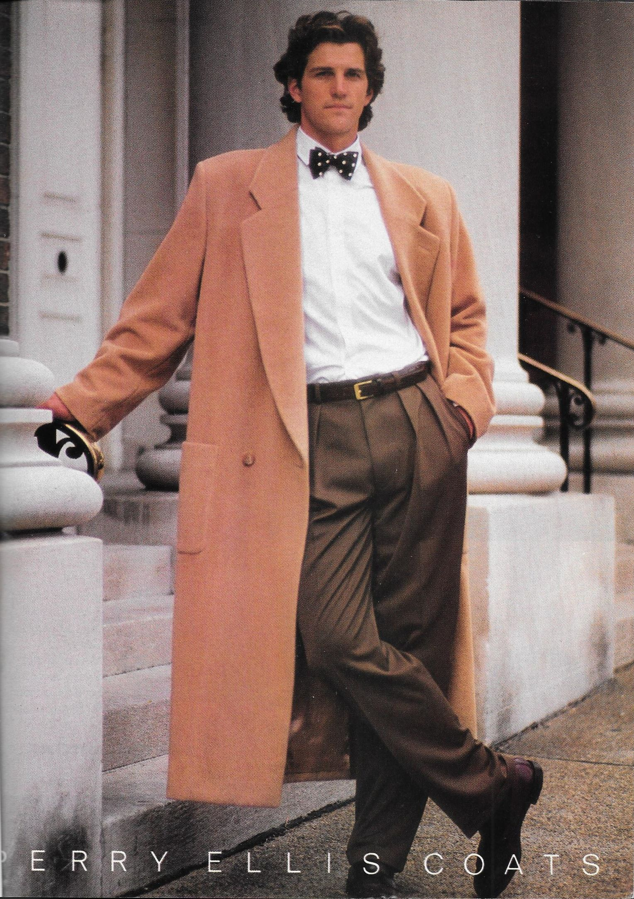
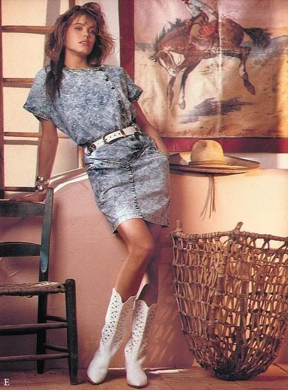

Learn Web
Beyond HTML
Saturday special arrangements
Around 10:30:
- end-of-class coffee at the Babila Hostel-Bistro


Web pages, today
Writing direct HTML today could actually make you look strange, at least:

There are increasing levels of adoption of standard platforms:
sets of ancillary .css and .js files which are included in the page and determine the overall visuals and how the page interacts.
Bootstrap 5 is a platform.
- make your own files, include CSS and javascript
Total creative control
need to learn and practice HTML, CSS and JS.
- Include a Bootstrap 5 template.
Can you follow the Bootstrap 5 Cheatsheet?
- include a Wordpress theme.
Less control but a uniform, smooth appearence.
- include a Javascript framework
pages are created by JS functions which parse cookies and users’ moves and select the appropriate elements.
Examples: Angular (Google), Webix…
able to collect and send back for analysis the telemetry of user movements, e.g., how long time is dedicated to reading each post.
- work in a programming language to create HTML files dynamically.
Example: the Flask module for Python
Create HTML files dynamically, by writing Python functions which return HTML code
Take module C4CSS: Coding for the Computational Social Sciences (6CFU) to learn Python.
Mixing HTML and Python code in the same file:
Advanced mark-up
Decoration and Injection
Marking-up your text to program its visualisation is decoration
Examples: MS Word, HTML5
Whereas HTML5 can be inspected and modified, in MS Word your text is embedded into the file
Injection
Adding mark-up commands to your text with software is injection
An HTML5 with a side script.js is an example of injection.
As G. Orwell would put it: decoration good, injection better!
Today injection is often carried out via pandoc.
The Pandoc software
Pandoc = all documents.
Peels the decorations out, gives the content to the needed injector
On Win, install it via Chocolatey:
On Apple, use Homebrew:
Work with Pandoc
Magic commands to transform files:
more examples here.
Try it into the online sandbox!
Example
Presentation vs. Web page
Today this distinction is blurring thanks to Javascript-based presentations that become web pages.
presentation: synchronous, restricted
Web page: asynch., universal.
Yet, we see the rise of manifold pages.
Remarkjs
Familiarise with the Remarkjs FrameworK
The ‘#1’ is the page/slide number:
https://my-schematic-remark-presentation.andreamariadt.repl.co/#1
See the source of the intro slides to Remarkjs
Notice non-MD directives, e.g., class: center, middle
From MD to slides
Pandoc can generate a HTML file with slides
Use MD annotations with two extra conventions
By default, # for section title and ## for slide title
a slide separator is needed: it redefines the meaning of --- in MD
Sometimes ----- is used.
Idea: keep the Markdown in a separated file, keep the HTML and Javascript boilerplate in a general index.html file
Revealjs
A project now available as a stand-alone slides.com
A refined set of Javascript embeddings is available from the main site
Let’s focus on MD embeddings
What about Powerpoint?
The first release was in 1987 [source: Wikipedia], i.e., well before the internet revolution.
For reference, this was fashion in 1987


Today,
everything is hyper-linked and hardly any document is self-contained
Cross-publishing invariably means changing styles
yet, content is often ambivalent synch/asynch
JS-based presentations have the concept of linking (and re-processing) at the core.
Powerpoint can only hope to import it in…